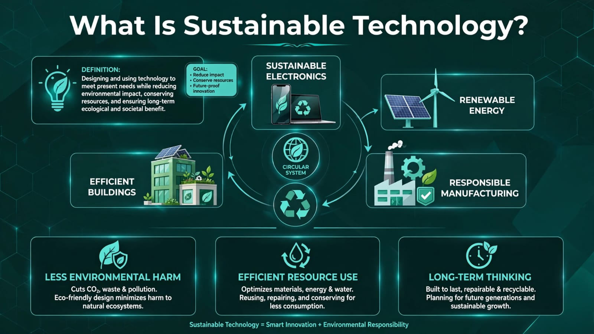
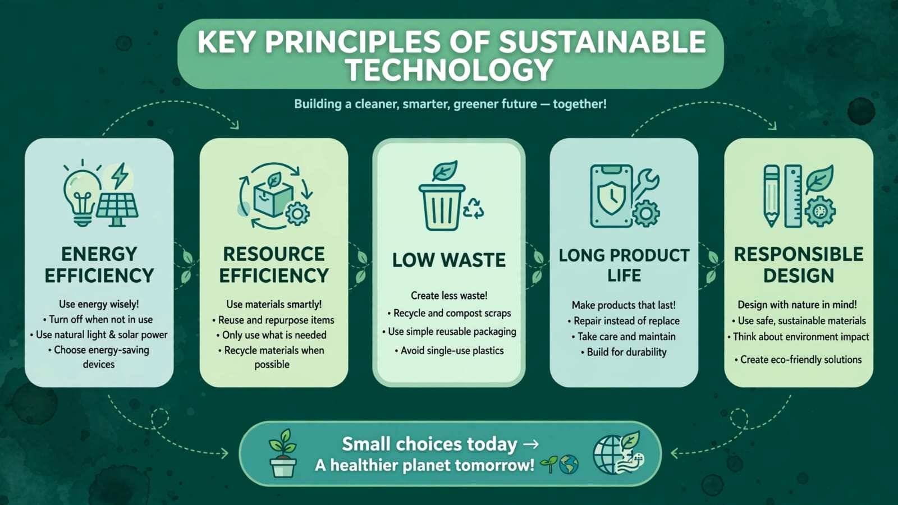
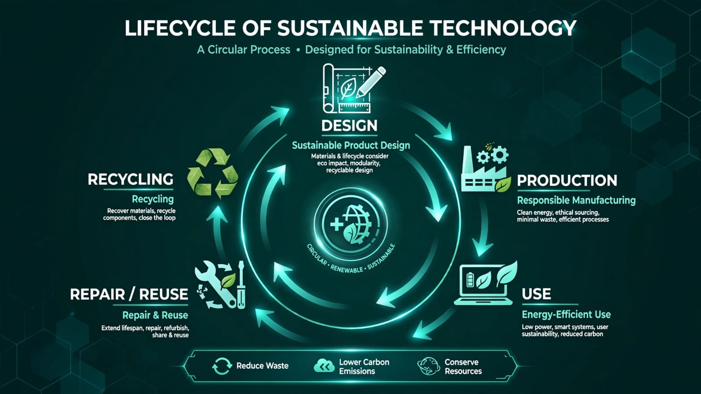
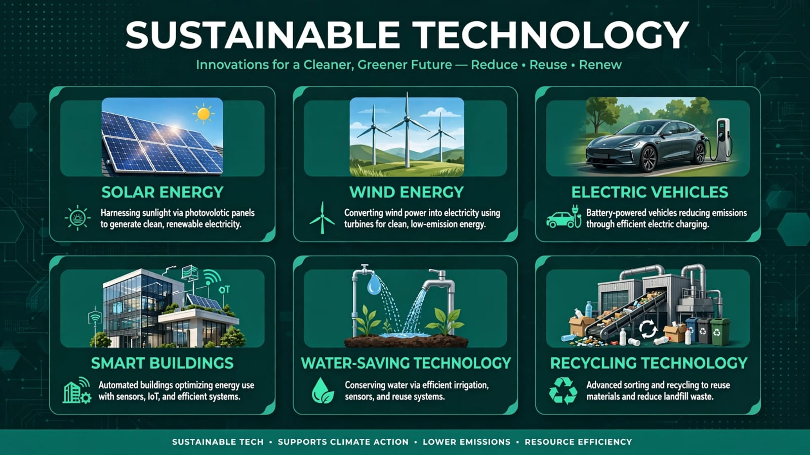

01 • The Concept
Understanding Sustainable Technology

02 • How It Works
Technology With Responsibility

03 • Key Principles
What Makes Technology Sustainable?

04 • Life Cycle
From Creation to Recycling

Progress with purpose — for people and for the planet.